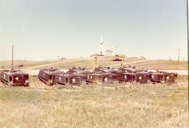

Confined to a barren prison camp in Washington, the
displaced Paiute Indians were dying. The Interior Department had promised to
send rations, but they never arrived. After being exposed to the elements
during the winter of 1880, fifty-eight of them had died – including thirty
children -- and many more were seriously
ill.

James
Wilbur, the pious fraud who served
as Indian Agent at Fort Simcoe, wouldn’t exert himself to see that his
prisoners were cared for, and wouldn’t permit them to migrate to more
hospitable surroundings.
Sarah
Winnemucca, daughter of the renowned Paiute chief of the same name, had
gone to Washington to lobby Interior Secretary Carl Schurz for relief. In May
she returned with a written promise that the department would arrange
for the Paiutes to relocate to Lovelock, Nevada, where they could at least
obtain food. When she arrived in Yakima, however, Sarah was informed that
Wilbur had received no instructions from Washington.
Sarah called a public meeting in which she recited, in
detail, the broken promises that had been made to her. In short order Sarah was
summoned to a second meeting with Wilbur, who intended to slap her down for impudently
assuming that a promise to an Indian meant something.
“Your people were content here until you came back and
stirred them up,” Wilbur insisted, condescendingly rebuking Sarah of “putting
the devil into their heads.”
That accusation came from a well-fed hypocrite who – in the classic
“Indian
Ring” tradition – was growing wealthy by embezzling money and supplies
promised to the pitiful, dying people over whom he presided.

“Mr. Wilbur, you forget that you are a Christian when you
can talk so to me,” Sarah chastised him, her composure barely concealing her
contempt. “You are starving my people here, and you are selling the clothes
which were sent to them. That is why you want to keep us here…. I say, Mr.
Wilbur, everybody in Yakima City knows what you are doing, and hell is full of
just such Christians as you are!”
“Stop talking or I will have you locked up!” bellowed
Wilbur.
“I don’t care,” Sarah defiantly replied. “My people are
saying I have sold them to you and get money from you to keep them here. I am
abused by you and by my own people, too.” By this time, Sarah had become a
nationally renowned lecturer and advocate of Indian rights, and she promised
that she would use her formidable influence to expose Wilbur’s murderous corruption.
“From this day on,” records Dorothy Nafus Morrison in her
biography, Chief
Sarah, “Father Wilbur was Sarah’s unrelenting enemy.” Wilbur had previously
extolled Sarah’s “noble work” and her impeccable character. Now his official
reports bristled with insistent and conveniently vague references to Sarah’s
“disreputable intrigues” and intimations of personal depravity. Sarah “is
utterly unreliable and no dependence whatever can be placed on her character or
her word,” insisted Wilbur in a communique to the Interior Department.
If Sarah had been alive and active during the 1970s, she
would most likely have been described as a “militant,” an “agitator,” and quite
possibly as a Communist.
The FBI would have collected a detailed dossier on her
mistakes and shortcomings – whether real, exaggerated, or invented – which
would have been artfully leaked to the press. She would have been surrounded by
paid informants and provocateurs who would keep her under surveillance,
sabotage her campaigns, and create whatever trouble they could.
After being
arrested on spurious charges, Sarah might have found herself in federal court
listening to one of the FBI’s paid perjurers describe her role in a grandiose
Communist plot against the very existence of the United States.

In brief, she would have received the same treatment given
to the American Indian Movement (AIM) and its most prominent spokesman, Russell Means, who
died of cancer on October 22. He is most widely remembered for his prominent
role in the 71-day standoff at Wounded Knee, in which a handful of poorly armed
AIM activists withstood a siege carried out by a huge federal military force
that intended to slaughter them.
The AIM was, to
borrow Will Durant’s phrase, a medley of discordant fragments. The same could
be said of Means, who made no effort to disguise his personal shortcomings or
to sanitize the troublesome aspects of his career as an activist.
If the Soviet Union
had somehow managed to invade and occupy the United States, the regime it would
have imposed on the country would have differed little, if at all, from the
Indian reservation system – which, let us not forget, was constructed by Carl
Schurz, a German-born socialist who had been one of Lincoln’s “Red Generals”
during the war against the South.

It’s not necessary to
endorse everything
AIM did -- or all of the alliances it made -- in order to understand that the organization’s grievances were
entirely legitimate. Given that AIM’s objective was to liberate people living
in America’s equivalent of the gulag archipelago, it’s reasonable to characterize
it as a militant anti-Communist group. The role played by the FBI, on the other
hand, was quite similar to that played by the Soviet Cheka in dealing with
independence movements within the nations subsumed into the USSR.
“They are a conquered
nation, and when you are conquered, the people you are conquered by dictate
your future,” declared Norman Zigrossi, a high-ranking FBI special agent in
Rapid City, South Dakota, in 1977. “This is a basic philosophy of mine. If I’m
part of a conquered nation, I’ve got to yield to authority.” The proper role of
the FBI in “Indian Country,” according to Zigrossi, was that of a “colonial
police force.”
Protecting the lives
and property of Indians was not a priority for the American Cheka. In 1972,
when an Oglala man named Raymond
Yellow Thunder was tortured and murdered by two white men in Gordon,
Nebraska, the local police refused to pursue the case, and the FBI couldn’t be
bothered to intervene. So Means and his AIM colleague Dennis Banks organized a
protest of more than 1,000 Indians from nearby reservations, who converged on
Gordon and “occupied” it until local authorities arrested and prosecuted Yellow
Thunder’s killers.
It was this act of
“Communist agitation” – that is, a demand
that the laws be faithfully and equitably enforced – that prompted the FBI to make AIM a
target of its COINTELPRO initiative. Secret police informants and
provocateurs began to infiltrate the movement. One of them, a sociopathic
former cop (and likely wife-murderer) named Douglas
Durham – would organize some of the most notorious “militant” activities
carried out in the name of AIM.
“Durham’s history as
a blackmailer, thief, and cheat was readily available to the FBI from the Des
Moines police, which in the 1960s had dismissed him from the force; a police
psychiatrist had diagnosed him as a `paranoid schizoid’ personality with
`violent tendencies’ and termed him `unfit for employment involving the public
trust’ after the unexplained death of his first wife in 1964,” recalls Peter
Matthessien in his book In the Spirit of
Crazy Horse.

Durham,
the psychiatrist concluded, was “unable to tell right from wrong.” While I
withhold judgment regarding the merits of psychiatry as a discipline, it’s
reasonable to conclude that this particular diagnosis was quickly and amply
validated.
In 1972, Durham was identified by a Des
Moines grand jury as the “major culprit” in a police corruption scandal
involving a sportswear theft ring: Durham, working undercover at a factory,
would steal clothes that were fenced by his comrades on the police force. In
the same year he was convicted of extortion on behalf of the Mob, but the
conviction was thrown out by an appeals court, which ruled that the case had
been tried in the wrong venue. In any case, by this time Durham
was safely in the employ of the FBI.
During his September 1976 testimony
before the Senate Judiciary Committee’s Subcommittee on Internal Security,
Durham described the AIM as a domestic salient of a Communist-backed insurgency
devoted to subverting American independence (and, for all we know, sapping
and impurifying all of our precious bodily fluids). Durham wasn’t the only FBI sock
puppet who was used to depict AIM as a cadre of “Red Indians.”
During the 1974 trial
of Means and Banks on charges arising from the 71-day standoff at Wounded Knee,
the prosecution called a “surprise witness” named Louis Moves Camp, a
22-year-old who had been expelled from AIM because of problems involving
alcohol and drug abuse.
Speaking from the
witness stand in a federal courthouse in St. Paul, Minnesota, Moves Camp
“offered testimony in support of the FBI’s cherished belief that the
international Communist conspiracy was somehow behind AIM; he declared that
agents from Russia, China, and Czechoslovakia had attended the first meeting of
the AIM-sponsored International Indian Treaty Council” a few months earlier,
recounts Matthiessen.
The first problem
with Moves Camp’s testimony – which was almost certainly scripted by FBI agent
David Price – is that the defense was able to document that he was in California at the time of the alleged events he described. He was also awaiting
trial for robbery, assault with a deadly weapon, and assault causing bodily
injury.
A few days before his
testimony, Moves Camp went “bar-hopping” across the border in River Falls,
Wisconsin with Price and another FBI agent named Ronald Williams. After the
sozzled Feds retired for the evening, Moves Camp took a high school-age girl to a remote
location and raped her. The agents arrived at the River Falls jail, flashed their
credentials, and freed their informant. Although Moves Camp wasn’t prosecuted
for that assault, within a year he was tried and convicted on a second rape
charge.
Such was the
character of a young man expelled by AIM – and eagerly embraced as a star
witness by the FBI.
Most of the WoundedKnee-related counts against Means and Banks were thrown out, and the juryacquitted them of a single charge of “conspiracy.” Before dismissing the case,
Judge Alfred Nichol lambasted the FBI and the prosecution for well over an
hour.
“The fact that
incidents of misconduct formed a pattern throughout the course of this trial
leads me to the belief that this case was not prosecuted in good faith or in
the spirit of justice,” Nichol observed. Tellingly, he also condemned the
“unlawful military involvement at Wounded Knee” during the 71-day standoff. “We
don’t want the military running the civil affairs of this country, or having
anything to do with the execution of the laws,” the judge pointed out.
 |
| Preparing for a massacre: U.S. Army APCs at Wounded Knee. |

The Wounded Knee occupation was a protest
against the lawlessness that prevailed on the Pine Ridge Reservation under the
rule of Dickie Wilson, the extravagantly corrupt, federally installed tribal
dictator. Wilson’s “Tribal Council” – a festering puddle of nepotistic
corruption -- was sustained by an officially sanctioned death squad called the
Guardians Of the Oglala Nation (or GOONs), which routinely harassed and beat
the ruler’s critics while doing nothing about the scores of unsolved violent
crimes committed on the reservation each year.
Wilson was of use to
the Feds because of his willingness to defy treaty law to turn over tribal
lands to government-favored mining and industrial interests. When AIM
protesters rallied at Wounded Knee to protest Wilson’s administration and
demand the recognition of rights guaranteed by treaty, the dictator sent the
GOONs to surround them. Playing to the most credulous element of the public,
Wilson insisted that “There is no doubt that Wounded Knee is a major Communist
thrust” and he promised to annihilate the dissenters. Given the pandemic
violence that had characterized Wilson’s reign, that threat was entirely
credible.
Means, the supposed
ringleader of the purported Communist cabal, depicted the standoff in terms
that resonated with the ideals of 1776, rather than the ideology of 1917:
“This is our last
gasp as a sovereign people. And if we don’t get these treaty rights recognized,
as equal to the Constitution of the United States – as by law they are – then
you might as well kill me, because I have no reason for living. And that’s why
I’m here in Wounded Knee, because nobody is recognizing the Indian people as
human beings…. We haven’t demanded any radical changes here, only that the
United States Government live up to its own laws. It is precedent-setting that
a group of `radicals,’ who in the minds of some are acting outside the law, are
just in turn asking the law to live up to its own. We’re not asking for any
radical changes. We’re just asking for the law to be equitably applied – that’s
all.”
“I’m not going to die
when I walk into Pine Ridge and Dickie’s Goons feel I should be offed,” Means
concluded. “I’m going to die fighting for my treaty rights.”
The FBI was eager to
grant Means the honorable death he envisioned. After the GOONs had surrounded
Wounded Knee, the U.S. government mobilized the largest domestic military
deployment since – well, since the last time the Feds set out to slaughter
Indians at the same location.
Armed FBI agents,
U.S. Marshals, SWAT teams, and federally supervised GOONs formed an iron ring
around the village. Colonel Vic Jackson, head of the Pentagon’s Civil Disorder
Management School, was tapped by the FBI to implement “Operation
Garden Plot,” a martial
law blueprint (one that still exists, in some form, today). The FBI envisioned
a scenario in which the Army would invade and “pacify” the village before the
FBI went in to “arrest” whoever might survive the onslaught. Armored Personnel
Carriers were on hand to deal with what were described as “bunkers” (and were,
in fact, root cellars). Phantom F-4 jets flew low-altitude reconnaissance runs
over the town.
“For seventy-one
days, a few hundred men, women, and children, supplied by volunteer airlifts --
and by sympathizers who slipped in and out during the night – had challenged a
large paramilitary force abetted by hundreds of short-haired vigilantes, red
and white, who were eager to wipe out the `longhair troublemakers,’”
Matthiessen recounts. “For Dick Wilson’s men, the threat posed by the
occupation of Wounded Knee was economic: under an Independent Oglala Nation,
the Tribal Council and its dole would end.”
The FBI clearly
intended to annihilate AIM at Wounded Knee. At one point, the Bureau ordered
the media to leave the area and then warned the occupiers to send out their
women and children. The anticipated massacre might well have been thwarted by
the presence of local white residents whom the FBI called “hostages” – many of
whom voluntarily stayed behind to protect their supposed captors from the Feds.
“The fact is, we as a
group of hostages decided to stay to save AIM and our own property,” explained
Wilbur Reigert, an elderly resident of the village. “Had we not, those troops
would have come down here and killed all of these people. The real hostages
were the AIM people.”
A little more than
two months after the siege began, mainstream public opinion was turning in
favor of AIM. During the standoff, the Feds threw several hundred thousand
rounds of ammunition into the village. Two of those rounds killed AIM
supporters, and another left a third paralyzed. A cease fire agreement was
reached. The White House agreed to review violations of Indian treaties, and
investigate civil rights abuses on the reservation. In addition, the Justice
Department would audit Wilson’s official accounts. The Feds made those promises
with glib insincerity that characterized all of their dealings with the
Indians, and displayed the familiar insouciant disdain in violating them.
Hundreds of AIM
supporters were prosecuted after Wounded Knee; nearly all of them were either
acquitted or saw the charges dropped. The FBI escalated its covert war against
the group, fomenting internecine squabbles, abetting the worst instincts of
some of its members, and in several cases facilitating outright murder.
In 1975, another
paramilitary invasion of the Pine Ridge Reservation – complete with helicopters
and fixed-wing aircraft, a chemical warfare team, snipers, and SWAT operators
-- occurred after two FBI agents were killed in a shoot-out. After fleeing to
Canada, Leonard
Peltier – the chief suspect in the killings -- was extradited on the basis
of what a federal court
later admitted was perjured
testimony. Peltier was convicted of murder and imprisoned for life. The evidence
presented against Peltier was identical to the case made against two of his
associates who had been acquitted of all charges.
Jack Coler and Ronald
Williams, the FBI agents who died in the shoot-out have been beatified as
heroes and martyrs – but nobody has ever explained why they were on the
reservation in the first place. The agents were supposedly on the reservation
to arrest a young man named Jimmy Eagle for stealing cowboy boots after a
drunken fight.
Why would the Feds be
involved in investigating such a petty crime after years of ignoring murders,
rapes, and rampant police brutality? One possible answer to that question is
found in the fact that the day
before the shootout, Dickie Wilson had turned over a large, mineral-rich tract
of the reservation to federal control, in violation of the 1868 treaty.
This suggests the possibility that the Feds were looking to create a pretext
for a paramilitary raid intended to clean out any remaining opposition to Wilson’s
junta.
Means dissociated
himself from AIM in the late 1970s. Over the next two decades he became a
successful film actor and, much more importantly, a passionate and eloquent
exponent of the non-aggression ethic.
In a singularly graceless obituary of Means, a reliably foolish and
incurably ill-informed commentator accused the Indian activist of fomenting
Communist revolution and seeking to establish “a foreign entity within our
nation’s borders.”
That statement is a
glistening nugget of unalloyed stupidity. Means, who was not a “foreigner” in
any sense of the word, wasn’t seeking to destroy the United States; he insisted
on claiming the rights promised to his ancestors in treaties that were made
pursuant to the authority (such as it is) of the U.S. Constitution. Failing
that, he emulated the patriots of America’s founding era by asserting
independence from a distant and irremediably corrupt central government.

I will grant that the
largely notional “Independent
Republic of Lakotah” created by Means is a “foreign” entity, in this sense:
It aspires to be a polity based on sound money, honest commerce, and peaceful
cooperation. It’s difficult to see how this is the fruit of “Marxist
militarism.”
“What’s happening in
my country is also happening in your country,” Means warned Americans of all
backgrounds shortly before his death. “You don’t even know it, but you’re
the Indians of the 21st Century, and that’s very sad.”
Russell Means never believed
that he had a “patriotic” duty to consider himself part of a conquered people
and therefore subject to the whims of his conquerors. What American worthy of
the name would?
Video extra
Although this presentation is a bit heavy with collectivist tropes, it does offer a very good overview of the Federal Government's war against the Plains Indians:
A quick personal note:
In
the interests of full disclosure I should acknowledge that my
perspective on Means and the AIM has changed dramatically over the past
decade -- as a quick examination of chapter six of this book will demonstrate.